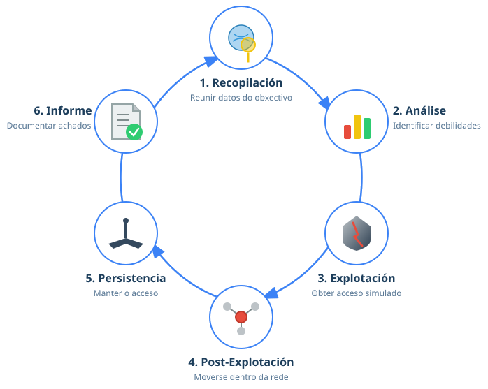
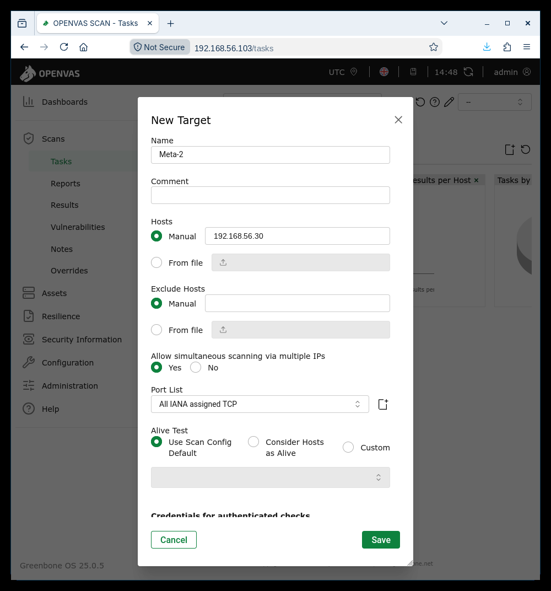
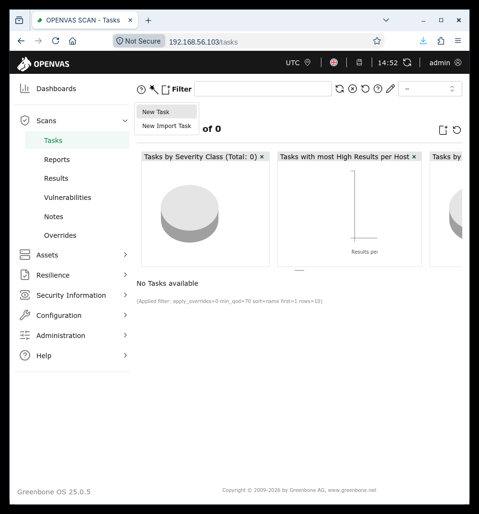
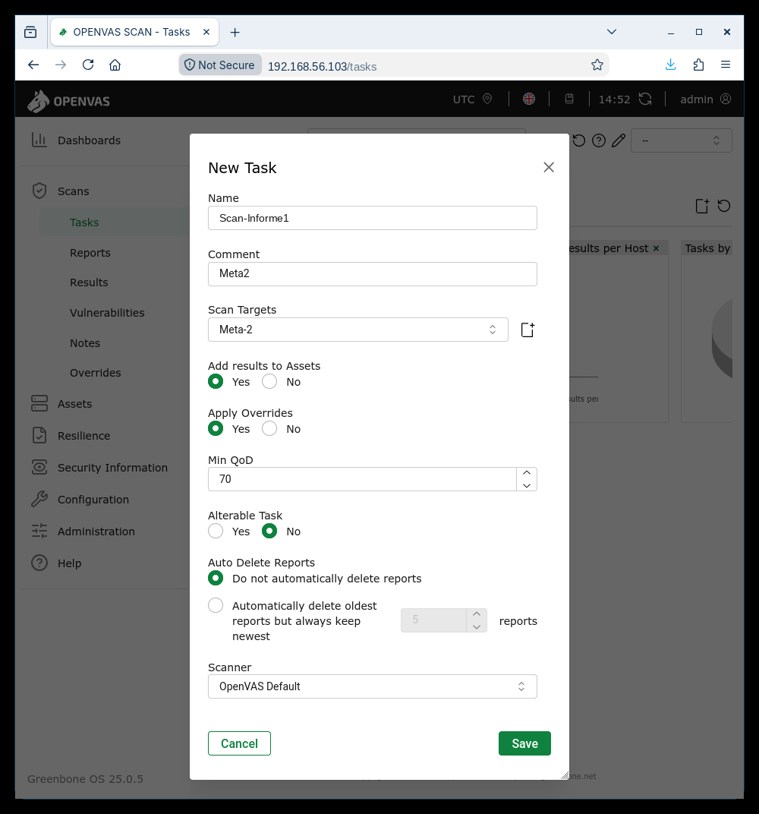
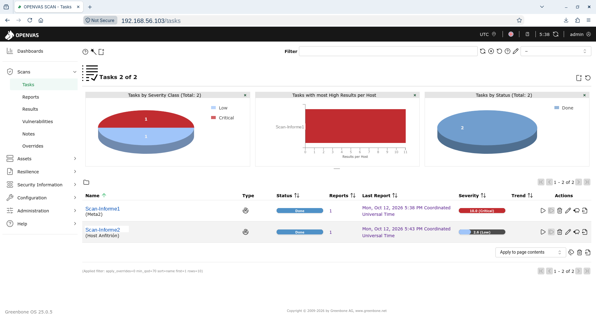
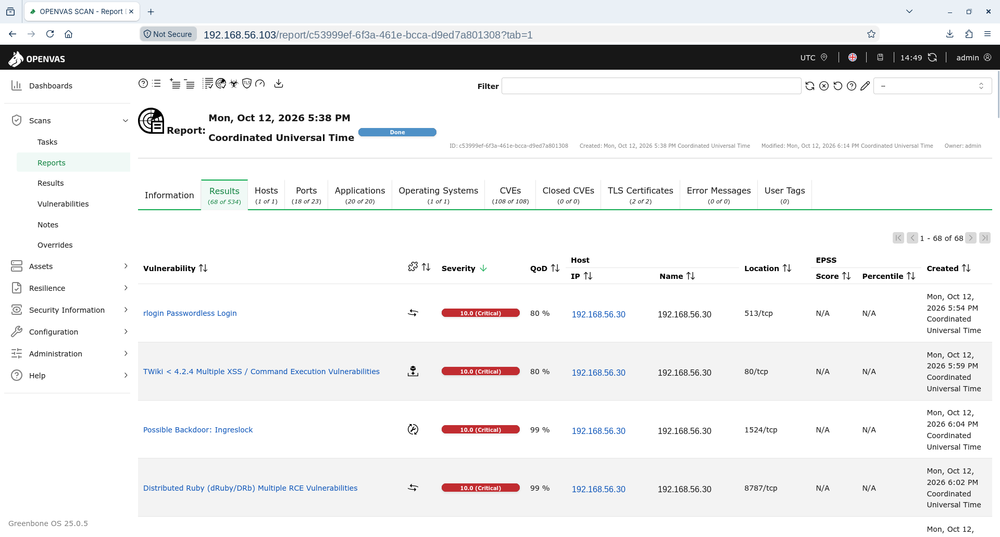
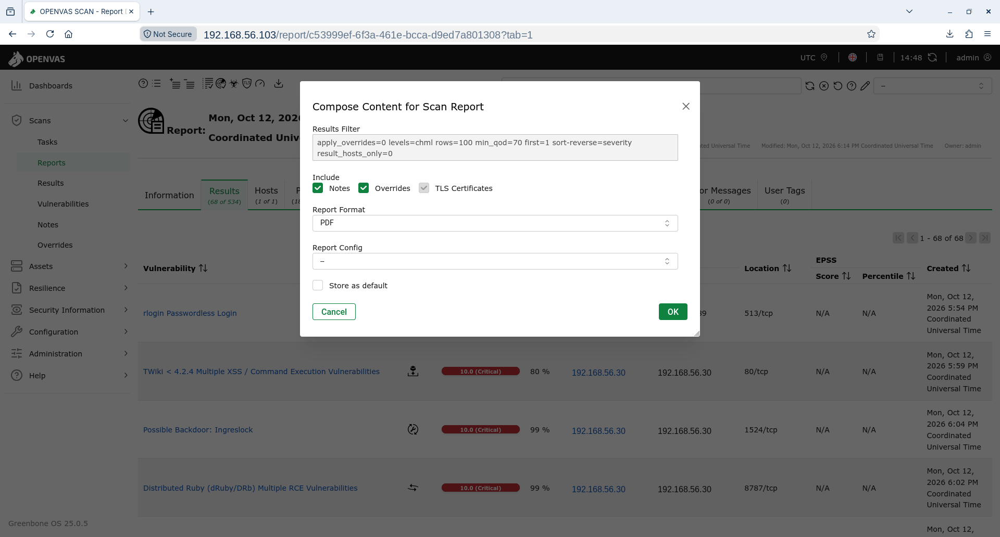

Práctica Taller: Análise de vulnerabilidades con OpenVAS/Greenbone (Metasploitable 2)
Antes de empezar
Esta práctica supón que xa liches os apuntamentos de OpenVAS / Greenbone (GVM), onde se explican a arquitectura, o feed, o fluxo target → task → informe e como interpretar a severidade (CVSS), o QoD e os falsos positivos. O obxectivo aquí é materializar a Fase 2 (Análise de vulnerabilidades) dun pentest cun escáner automático.
Recomendacións
- Traballa sempre nunha rede illada (host-only): un escaneo xera tráfico intrusivo.
- Lanza o escáner só contra a máquina de laboratorio (Metasploitable 2), nunca contra sistemas de terceiros.
- Lembra que OpenVAS identifica, non explota: a explotación dos achados faise noutra práctica.
Escenario
- Escáner: a appliance OPENVAS FREE (OVA) de Greenbone, co GVM preinstalado e o feed sincronizado (p.ex.
192.168.56.103). - Obxectivo: a máquina Metasploitable 2 (Ubuntu 8.04 chea de servizos antigos, p.ex.
192.168.56.30), ideal para que o escáner "acenda" con moitos achados. - Ambas na mesma rede Só anfitrión (Host-only)
192.168.56.0/24.
Como montar o escáner (apéndice)
No Apéndice · OpenVAS / Greenbone tes o despregue paso a paso: importar a appliance OPENVAS FREE (OVA), axustala á rede host-only e completar o asistente, listo para esta práctica.
Obxectivo
Realizar unha análise de vulnerabilidades completa sobre Metasploitable 2 con OpenVAS/Greenbone: crear o obxectivo, lanzar o escaneo, triar o informe, correlacionar os achados coa clasificación CVSS e exportar o resultado como materia prima do informe final.
Pasos básicos
- Ter o escáner listo: a appliance OPENVAS FREE (OVA) importada, na rede host-only e co asistente completado (ver Apéndice · OpenVAS).
- Ter o obxectivo en marcha: descargar e arrancar Metasploitable 2 en VirtualBox, en rede Só anfitrión (Host-only).
- Comprobar que Kali e Metasploitable 2 se ven na mesma rede (mesmo rango host-only).
- No Greenbone Security Assistant (web): crear un Target, crear unha Task e lanzar o escaneo.
- Abrir o Report, triar os achados (severidade, QoD, CVE) e validar os máis relevantes.
- Exportar o informe e elaborar o informe final.
Fases dun test de intrusión (Pentest)

Fase 1: Recopilación de información
Prerrequisito
Realizar os Pasos básicos do 1 ao 3.
Ter a appliance OPENVAS FREE acesa (arranca o GVM soa) e Metasploitable 2 en execución.
Desde calquera máquina Linux da rede host-only (o teu anfitrión ou unha VM de laboratorio — a appliance non ofrece shell xeral), identifica a IP do obxectivo e confirma que responde:
sudo netdiscover -r 192.168.56.0/24 || sudo arp-scan --interface=eth0 192.168.56.0/24 || sudo nmap -sn 192.168.56.0/24
ping -c1 192.168.56.30 -R # TTL ≃ 64 ⇒ GNU/Linux
IP de exemplo
Neste procedemento a IP de Metasploitable 2 foi 192.168.56.30; no teu caso pode variar. Axusta os valores en consecuencia.
Un escaneo rápido con nmap dá o mapa de servizos que despois OpenVAS comprobará en profundidade (recoñecemento → análise):
nmap e OpenVAS complétanse
nmap di que servizos e versións hai; OpenVAS comproba cales son vulnerables e asígnalles CVSS e CVE. O escaneo de nmap serve para validar despois os achados do escáner.
Fase 2: Análise de vulnerabilidades
Esta é a fase central da práctica. Faise desde a interface web do Greenbone Security Assistant.
1. Acceder á interface web
Desde o navegador do anfitrión (ou de calquera máquina na rede host-only), abre a consola web da appliance na súa IP, por HTTPS estándar (sen engadir porto):
Acepta o aviso de certificado autoasinado (Avanzado → Proceder) e inicia sesión co usuario admin creado no asistente (ver apéndice).
Agarda a que o feed estea cargado antes de escanear
A primeira vez convén actualizar o feed da appliance e deixar que procese os NVTs/SCAP antes de escanear; mentres tanto, os Scan Configs (ex. Full and fast) poden aparecer baleiros e os escaneos darían resultados parciais.
Comproba o estado en Administration → Feed Status: todas as liñas (NVT, SCAP, CERT, GVMD Data) deben quedar en «Current». Só entón lanza o escaneo. A actualización do feed tamén se pode lanzar desde o menú de administración do Greenbone OS.
2. Crear o Target (obxectivo)
Menú Configuration → Targets → New Target (icona ✱):
- Name:
Metasploitable2 - Hosts:
192.168.56.30(a IP do teu obxectivo) - Port List: deixa a predeterminada (p.ex. All IANA assigned TCP) para esta práctica.
- Credentials: déixaas baleiras → faremos un escaneo non autenticado (desde fóra).
- Garda con Save.

3. Crear a Task (tarefa de escaneo)
Menú Scans → Tasks → New Task (icona ✱):
- Name:
Scan Metasploitable2 - Scan Targets:
Metasploitable2(o target anterior) - Scan Config: Full and fast (perfil recomendado por defecto)
- Scanner:
OpenVAS Default - Garda con Save.


4. Lanzar o escaneo
Na lista de Tasks, preme o botón ▶ (Start) da túa tarefa. O estado pasará a Requested → Running cunha porcentaxe de progreso.
Paciencia
O escaneo tarda varios minutos (segundo o perfil, a rede e os recursos da VM). Podes seguir o progreso na columna Status; cando chegue a Done xa hai informe.

5. Abrir e triar o informe
Cando a tarefa estea en Done, entra en Scans → Reports e abre o informe. Verás os achados (Results) ordenados por Severity. De cada achado interesa:
| Columna | Que mira |
|---|---|
| Severity | Gravidade (CVSS 0.0–10.0). Prioriza de maior a menor. |
| QoD | Fiabilidade da detección (%). QoD baixo ⇒ posible falso positivo. |
| Host / Port | Onde se atopou. |
| References (CVE) | Identificador(es) para afondar. |
| Solution | Mitigación proposta. |
En Metasploitable 2 aparecerán moitos achados de severidade alta. Algúns característicos:
- vsftpd 2.3.4 backdoor — relacionado con CVE-2011-2523 (severidade crítica).
- Samba
usermap_script(CVE-2007-2447) — execución remota de comandos. - Servizos obsoletos con cifrado débil (Telnet, rlogin, SSLv2…), versións antigas de Apache/Tomcat/MySQL, etc.

6. Correlacionar coa clasificación de risco (CVSS)
Colle un achado crítico (p.ex. o backdoor de vsftpd) e interpreta a súa severidade coa guía de Clasificación do risco (CVSS): descompón o vector, entende por que puntúa o que puntúa e ten presente a diferenza entre 9.8 e 10.0. Así pasas dun número a unha priorización razoada.
Valida antes de dar por bo
Antes de incluír un achado no informe, valídao (sobre todo os de QoD baixo): confirma a versión real do servizo co nmap -sV da Fase 1 ou reproducindo a condición. Un informe con falsos positivos perde credibilidade.
Automatización (GMP)
Todo este fluxo (crear target, task, lanzar e descargar o informe) pódese automatizar co protocolo GMP. Na appliance a vía normal é a consola web; nunha instalación con acceso a shell faríase con gvm-cli desde scripts.
Fase 3: Explotación
Non se aplica nesta práctica: OpenVAS identifica, non explota. A explotación dos achados realízase coas ferramentas axeitadas — por exemplo, o backdoor de vsftpd 2.3.4 explótase con Metasploit na práctica de Metasploitable 2 (Fase 3). Aquí o resultado é o informe de vulnerabilidades, non o acceso ao sistema.
Fase 4: Post-explotación
Non se aplica: sen explotación non hai sesión no sistema sobre a que recoller información.
Fase 5: Persistencia
Non se aplica: é unha análise de vulnerabilidades, non un compromiso do sistema.
Fase 6: Informe final
O informe de OpenVAS é materia prima directa do informe final: xa trae vulnerabilidades, severidade CVSS, referencias CVE e solucións propostas.
1. Exportar desde Greenbone
No informe aberto, usa Download Filtered Report: ábrese o diálogo Compose Content for Scan Report, onde escolles o Report Format — PDF (lectura), CSV (táboa de achados) ou XML (para procesar) — e confirmas con OK.

2. Redactar o informe final
Seguir o indicado en Informes de Pentesting. Os achados de OpenVAS poden volcarse nun informe profesional (p.ex. en SysReptor), creando un Finding por vulnerabilidade relevante coa súa severidade e evidencia.
Exemplos nas seccións